Астрологический прогноз
Марк подготовил для вас астрологический прогноз на 2024 год. И пусть Марк – почтовая марка, а не астролог, но он очень старательный и любознательный. Он изучил кипы материалов и пообщался с лучшими астрологами, чтобы подготовить этот гороскоп для вас.
А еще у Марка превосходное чувство юмора. Как известно, смех и улыбка продлевают жизнь, и Марк хотел, чтобы, прочитав прогноз на 2024 год вы обязательно улыбнулись.
Нажимайте на шарик, который соответствует вашему знаку зодиака, и читайте, что приготовил для вас 2024 год.»
Отгадай слово, и впиши его в последнем письме

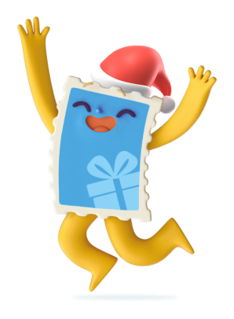
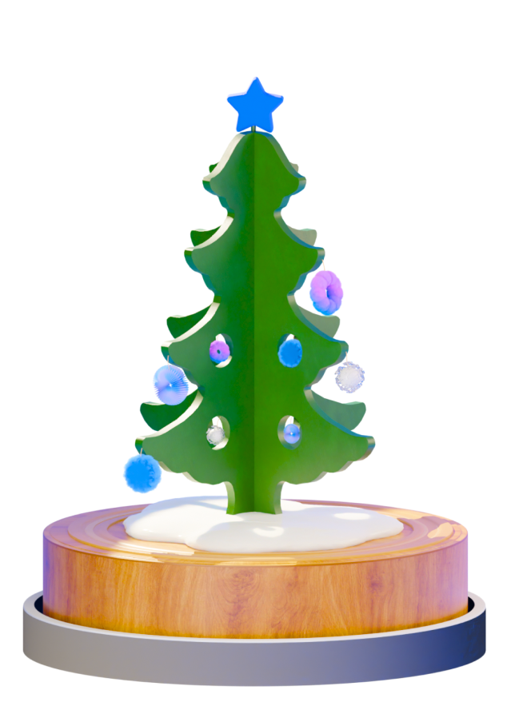
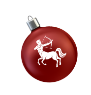
Cтрелец
Предсказание на 2024 год для стрельцов
Стрельцов ожидает очень удачный год. Вы постоянно будете оказываться в нужном месте и в нужное время, познакомитесь с хорошими людьми, которые привнесут в вашу жизнь новые краски. Готовьтесь к удивительным встречам прямо с января! Однажды из-за поворота вам навстречу может выйти ваша любимая актриса, которая обронит шапку, когда вы будете проходить мимо неё… Вы поднимите шапку и протянете ей, а потом у вас завяжется разговор… Я даже не знаю, что бы сделал, если бы мне навстречу вышла Елена Яковлева… Хватайте удачу за хвост и не дайте ей ускользнуть!
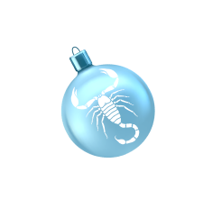
Скорпион
Предсказание на 2024 год для скорпионов
У Скорпионов в 2024 году будет море впечатлений! Новые места, случайные встречи, яркие эмоции и много смеха. Звезды говорят, что эти события оставят след в вашей судьбе! Это поворотный год для вашего знака зодиака. И повернёте вы туда, куда надо – к ещё более счастливой и наполненной жизни. Туда, где улыбки шире, объятья теплее, еда вкуснее, сон крепче… Самый главный поворот произойдёт в вашем мировоззрении – вы станете более позитивно смотреть на мир вокруг себя, и сможете убедиться на собственном примере, что от улыбки хмурый день светлей. Я, например, каждое утро первым делом улыбаюсь себе в зеркале. Это сразу настраивает на позитивный лад, бодрит и поднимает мне настроение.
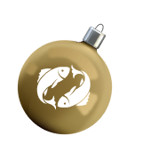
Рыбы
Предсказание на 2024 год для рыб
Неожиданно для себя самих, Рыбы станут примером для подражания. Вы будете источать житейскую мудрость, королевское спокойствие, а люди, окружающие вас, будут к вам тянуться. Природная скромность не даст вам зазнаться, вы вдруг почувствуете себя очень органично в образе человека, у которого всегда найдётся доброе слово поддержки и полезный своевременный совет. К вам будут приходить, как когда-то шли к Оракулу, вас будут уважать, как уважали Конфуция, к вам будут тянуться, как тянулись к Валерию Леонтьеву на пике его популярности (так мне сказал астролог, я сам не видел ни Конфуция, ни Валерия, но у меня нет причин не доверять звёздам). Не волнуйтесь, это не будет вас утомлять, напротив – звезды говорят, что в этом вы будете черпать энергию. Отдавая, вы будете получать вдвойне!
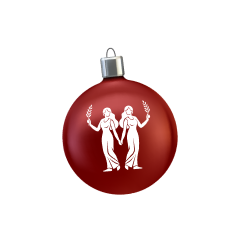
Близнецы
Предсказание на 2024 год для близнецов
Для вас год пройдёт очень спокойно, ведь спокойствие вам так необходимо. Вы будете наслаждаться размеренным ритмом жизни, теплом и уютом своего дома, вести неспешные, доверительные и глубокие диалоги с близкими. Это год эмоционального равновесия и поиска гармонии с собой. Возможно, в конце года вы найдете себя где-то высоко в горах Алтая в единении с природой. А может быть вы заведёте собачку или котёнка. Я, может быть, тоже хотел бы иметь котёнка, но не хочу заводить себе конкурента по мимишности.
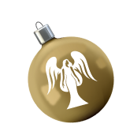
Дева
Предсказание на 2024 год для дев
2024 год начнётся с приятных неожиданностей, которые зададут темп всему году. Я заинтригован, а вы? Вы отточите навык адаптации к новому на 100%, а ведь адаптивность – это одна из важнейших компетенций 21 века (я об этом в журнале читал). Звёзды говорят, что к концу года вы себя просто не узнаете, и, оглядываясь назад, будете с улыбкой вспоминать прошлую версию себя, радуясь прогрессу!
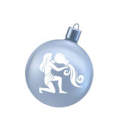
Водолей
Предсказание на 2024 год для водолеев
У Водолеев будет год познания себя. Вы будете склонны предаваться размышлениям о себе, своём прошлом, настоящем и будущем. Вы поймёте, чего хотите, о чём мечтаете и начнёте плавно подбираться к осуществлению своих истинных желаний. Окружение будет удивляться вашей задумчивой умиротворённости, но вас это смущать не будет, ведь вы будете в абсолютной гармонии с собой. И если вы всегда мечтали завести Алабая, то в следующем году он у вас появится. Хотели сходить на концерт любимой группы? Вы туда обязательно сходите. Мечтали увидеть Байкал или Долину Гейзеров? 2024 год станет лучшим временем для таких путешествий! Настало время прислушаться к себе! А я давно хотел выучить наизусть все индексы России, и ничто меня не остановит!
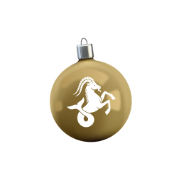
Козерог
Предсказание на 2024 год для козерогов
Мы, Козероги, будем словно в приключенческом фильме. Нас ждут удивительные поездки, изумительные находки, азарт и неугасающий интерес к тому, что несёт завтрашний день. Мы не будем скучать ни дня! А ещё звезды предсказывают, что в этом году пройдут проверку на прочность наши отношения с друзьями. Мы укрепим дружбу с теми, кто пойдёт с нами в приключения, и станем практически семьёй!
Я, как Козерог, точно знаю – у нас очень насыщенная жизнь! Мы всегда открыты для нового опыта, и я с нетерпением жду начала своего личного приключенческого фильма. Хотелось бы, чтобы он был похож как минимум на «Кин-дза-дза». Ку!
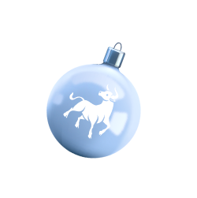
Телец
Предсказание на 2024 год для тельцов
Следующий год будет полон ярких событий, авторами которых станете вы сами. Вы, как никто другой, поймёте, что каждый человек – кузнец своего счастья. По эмоциям этот год будет похож на концерт вашего любимого певца. Представили? Я за вас очень рад! Как представлю себя, целый год танцующего на концерте Филиппа Бедросовича… Но, увы, я не телец :(
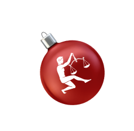
Весы
Предсказание на 2024 год для весов
Для Весов 2024 год станет годом заботы о себе: вы сможете укрепить как физическое здоровье, так и душевное. Если вы долго откладывали визит к врачу, то сможете его посетить. Если вы давно хотели приобрести аппликатор Кузнецова – ваше время пришло! Ну а те, кто давно хотел начать заниматься спортом, то они побегут, поплывут, запрыгают на фитболе или сядут на шпагат. А кто уже давненько не баловал себя походом на массаж, в салон красоты или просто в кафе, тот обязательно себя побалует! А я, пожалуй, буду брать с вас пример, и в новом году начну путешествовать ещё больше, ведь это моё самое любимое занятие!
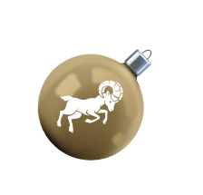
Овен
Предсказание на 2024 год для овнов
2024 год сулит овнам небывалые успехи в области отношений с другими людьми. Вы укрепите существующие связи и найдёте новых друзей. Недоброжелатели вокруг вас будут исчезать на глазах, но не потому что они резко похудеют, а потому что они изменят отношение к вам в лучшую сторону. А я вижу, что вы просто чудо! Хорошие отношения со всеми важными для вас людьми гарантируют улучшение вашего настроения.
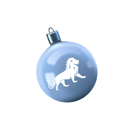
Лев
Предсказание на 2024 год для львов
Для Львов 2024 год – это год развития во всех сферах жизни! Вы станете больше читать, будете чаще посещать образовательные мероприятия. Возможно, вы и сами начнёте что-то преподавать или станете отличными наставниками для новичков. С вашей харизмой вам всё по плечу! Смотрю я на вас и любуюсь!
А ещё звезды предупреждают, что вам могут начать сниться сны о том, как лучше организовать работу, вы будете видеть таблицы и схемы. Кто-то из вас даже может стать эдаким Менделеевым от Почты России!
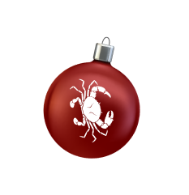
Рак
Предсказание на 2024 год для раков
Раков ожидает настоящая буря страстей! Я думаю, что это будет похоже на бразильские сериалы или «Санту-Барбару», только лучше. Скучать в 2024 году точно не придётся! Посмотрите в зеркало, ведь там произведение искусства, загляните в глаза, а там – огонь!
И с этим огнём в глазах и в сердцах вы проведёте весь год. Вокруг вас будет колыхать пламя любви, и окружающие будут тянуться к вам, чтобы подзарядиться вашей энергией, особенно противоположный пол. И весь мир окрасится в новые краски – ярче, пышнее, игривее!